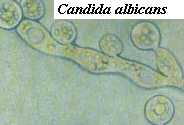
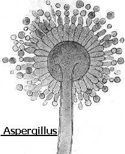

ANTI-FUNGAL IMMUNITY
Immune response towards Fungi is understood to a less degree, than anti-bacterial one. Yet, it is well known that in superficial mycoses immunity is based, mostly, on cellular mechanisms, namely lymphocytic killing of infected cells and antibody-dependent macrophagal cytotoxicity against molds and yeasts. In deep mycoses granulocytic phagocytosis and activation of polymorphonuclear antibacterial proteins – defensins – is of great importance. Of some interest and practical significance is the fact, that the deficit of autoimmunity controlling mechanisms, causing autoallergy, is quite often accompanied by decrease of anti-fungal resistance and proceeds with mycoses. The combination of autoimmune endocrinopathies, immunodeficit and candidiasis is not rare.
 
Some of them share with plant pollen, worms and insects the epitopes, often provoking anaphylaxis in predisposed individuals. Others may cause immune complex type of allergy.
The persistence of pathogenic fungi on skin and, especially, on visceral mucosa (for instance, in bronchi and lungs) leads to bi-directional diffusion of antigens and antibodies, precipitation of their complexes within the tissues and may cause subacute and chronic immune complex reactions paralleled by delayed hypersensitivity of granulomatous type. The example of this is allergic alveolitis, provoked by Aspergillus or other molds.
NEXT CHAPTER OR